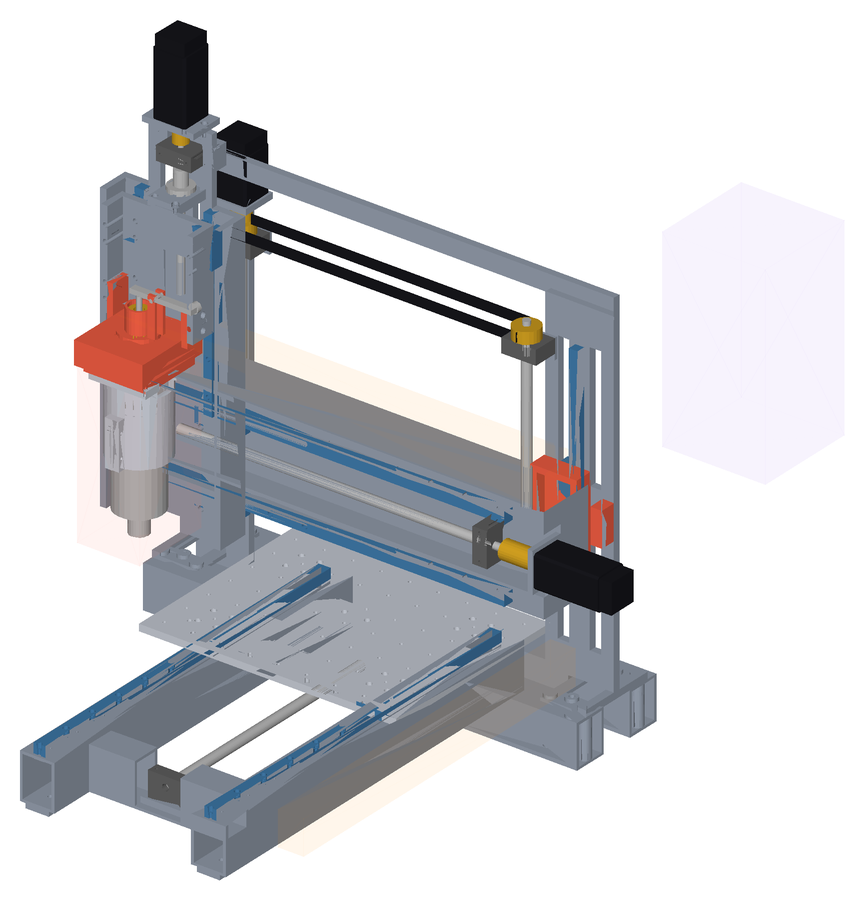
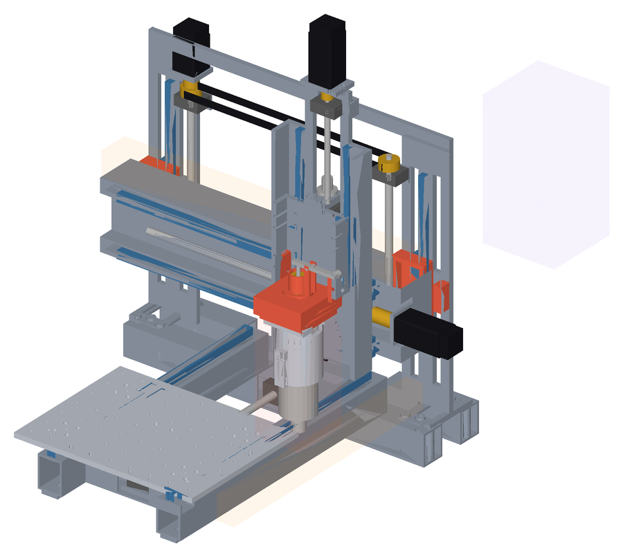
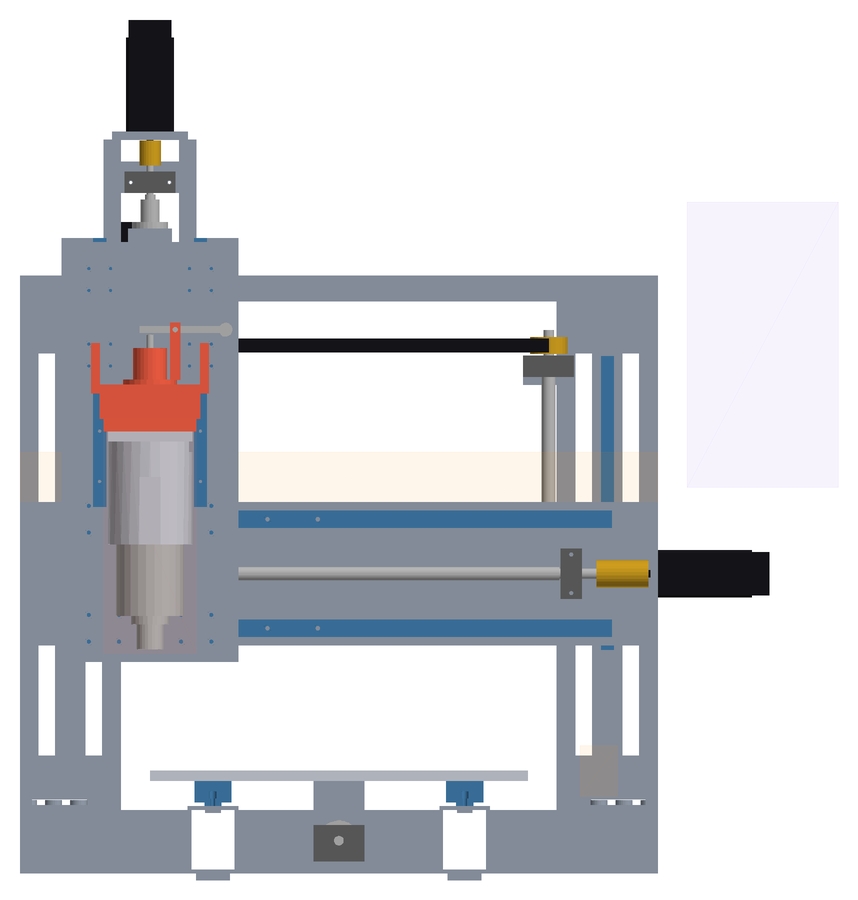
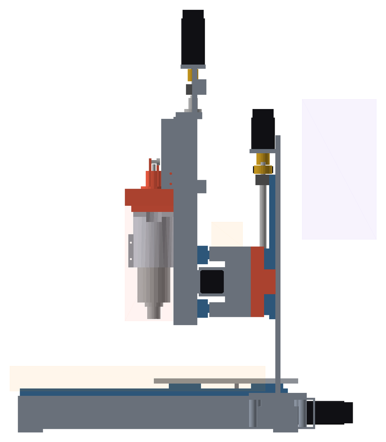

02 · Base Pro · CAD
Pro
in CAD.
Assieme parametrico della base Pro con le lavorazioni di dettaglio, costruito dalla stessa pipeline della Standard (tools/cad/standard_assembly.py --base pro, parametri in tools/cad/pro_params.py): controlli di collisione in HOME, CENTER, MAX e DOCK, sweep di 125 pose, traiettoria del trasferitore, masse contro la BOM. Valori MULE / TARGET.
Pro69,6 kg dal CADSoglia 72 kgICD v4
Controlli
0 collisioni.
| Config | X / Y / Z | Collisioni | Giochi < 8 | STEP | 3D |
|---|---|---|---|---|---|
| HOME | 0 / 0 / 0 | 0 | 0 | STEP ↓ | 3D |
| CENTER | 225 / 175 / -70 | 0 | 0 | STEP ↓ | 3D |
| MAX | 450 / 350 / -140 | 0 | 0 | STEP ↓ | 3D |
| DOCK | 440 / 0 / 0 | 0 | 0 | STEP ↓ | 3D |
Sweep 125 pose: 0 collisioni, 0 FAIL, 0 WARNING. Trasferitore 41 pose: 0 collisioni.
Masse
69,6 kg.
| Riga BOM | Pezzo | BOM kg | CAD kg |
|---|---|---|---|
| MP-BAS-001 | Basamento lavorato | 8,6 | 8,6 |
| MP-GAN-002 | Spalle gantry | 4,6 | 4,6 |
| MP-GAN-001 | Trave gantry | 5,8 | 5,8 |
| MP-BRK-001 | Staffe chiocciole, motori e supporti | 0,9 | 0,9 |
| MP-TBL-001 | Tavola Y / tooling plate | 5 | 5 |
| MP-XC-001 | Carrello X | 4,4 | 4,4 |
| MP-Z-001 | Piastra asse Z | 1,1 | 1,1 |
| MC-TD-001 | Master kinematic plate | 1 | 1 |
| MC-TD-002 | Base spindle receiver | 0,5 | 0,5 |
| MP-SP-003 | Spindle mount | 1,1 | 1,1 |
| MP-GL-LOCK | Locking + references | 2 | 2 |
| MC-TD-003 | Automatic clamp | 0,4 | 0,4 |
Macchina: 69,6 kg dal CAD (commerciali dalla BOM) contro 69,6 kg della BOM; soglia 72 kg: PASSA. Ingombro 893 × 833 × 1.025 mm.
Scelte
- Stessa cinematica e stessa ICD v4 (ponte fisso, tavola Y, ToolDock comune); master e clamp come la Standard, pacco molle classe P ≥ 3,8 kN (TARGET).
- HGR20 / HGH20CA su X e Y, HGR15 / HGH15CA su Z, SFU1605 X/Y con BK12/BF12, SFU1204 Z, NEMA23 3 Nm; tavola piena 12 mm (D018).
- Spindle 1,5 kW Ø80 ER16 ad acqua (classe): inviluppo testa L 280 (classe P in revisione nella ICD), receiver 110 × 110 per il mount Ø80.
- Basamento a scala in tubi 80 × 60 × 4 senza fondo (D037): longheroni, traversa BF, traversa BK Y, traversa di coda con il motore Y e 4 sbalzi sotto le flange ICD §5 dei montanti del lift; niente traversa anteriore.
- Gantry Lift: montanti a piastra 12 mm con 4 finestre ai lati della guida, una guida HGR15 con 2 pattini e una vite SFU1605 per lato, staffe della trave a C (32 mm, faccia pattini 12), cinghia HTD di sincronismo, motore G diretto sulla vite sinistra, bloccaggi a cuneo, traversa superiore 12 × 30.
- La trave (scatolato 100 × 170, pareti 4, faccia guide 8) scorre davanti ai montanti: motore X, catene e ToolDock restano liberi a ogni quota del lift; il magazine si sposta oltre il montante destro (x 730).
- Massa dal CAD sotto i ~70 kg di D011 (D037); le masse delle viti a sfere sono quelle del CAD (vite piena + chiocciola, limite superiore).
- Gantry Lift: corsa 150 mm (posizione 0 nelle analisi: asse di setup, fermo in lavoro).
Viste di controllo




Rigenerare
python tools/cad/standard_assembly.py --base pro, poi standard_parts.py, export_glb.py e render_views.py con lo stesso --base pro.